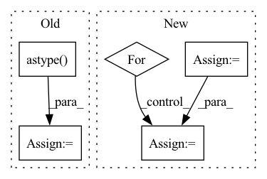

Pattern ID :26442

Before Change
b_percentile = np.percentile(b_copy, percentile)
new_w_mask = torch.Tensor((w_copy >= w_percentile).astype(int))
new_b_mask = torch.Tensor((b_copy >= b_percentile).astype(int))
self.w_mask = new_w_mask
self.b_mask = new_b_mask
After Change
w_copy = np.abs(self.w.detach().numpy())
b_copy = np.abs(self.b.detach().numpy())
new_w_mask = np.zeros_like(w_copy)
new_b_mask = np.zeros_like(b_copy)
for task_num in range(self.num_tasks):
if task_num != 0:
for prev_idx in range(task_num - 1):
w_copy[task_num][new_w_mask[prev_idx] == 1] = 0
b_copy[task_num][new_b_mask[prev_idx] == 1] = 0
w_percentile = np.percentile(w_copy[task_num], percentile)
b_percentile = np.percentile(b_copy[task_num], percentile)
new_w_mask[task_num] = (w_copy[task_num] >= w_percentile).astype(int)
new_b_mask[task_num] = (b_copy[task_num] >= b_percentile).astype(int)
self.w_mask = torch.Tensor(new_w_mask)
self.b_mask = torch.Tensor(new_b_mask)
In pattern: SUPERPATTERN
Frequency: 4
Non-data size: 5
Instances
Fragment ID: 79290617
Project Name: beyond-ml-labs/beyondml
Commit Name: 03dd7b87e47d75ba5a7317f31e1ff50b340898a7
Time: 2022-06-02
Author: 77127228+jacobrenn@users.noreply.github.com
File Name: mann/burning/layers/MultiMaskedConv2D.py
M Class Name: MultiMaskedConv2D
N Class Name: MultiMaskedConv2D
M Method Name: prune(2)
N Method Name: prune(2)
M Parent Class: torch.nn.Module
N Parent Class: torch.nn.Module
M File Name: mann/burning/layers/MultiMaskedConv2D.py
N File Name: mann/burning/layers/MultiMaskedConv2D.py
M Start Line: 98
M End Line: 107
N Start Line: 85
N End Line: 103
'>
Before Change
up = np.random.rand(N, 1)
if sparse_variables_1 > 0:
if sparse_variables_1 < 1:
sparse_variables_1 = np.ceil(sparse_variables_1 * N).astype("int")
up[np.random.choice(np.arange(N), N - sparse_variables_1, replace=False)] = 0
vp = np.random.rand(M, 1)
if sparse_variables_2 > 0:
if sparse_variables_2 < 1:
sparse_variables_2 = np.ceil(sparse_variables_2 * M).astype("int")
vp[np.random.choice(np.arange(M), M - sparse_variables_2, replace=False)] = 0
gaussian_x = np.random.normal(0, eps, (m, N))
gaussian_y = np.random.normal(0, eps, (m, M))
X = np.outer(z, up)
Y = np.outer(z, vp)
X += gaussian_x
Y += gaussian_y
return X, Y, up, vp
After Change
z = np.random.normal(0, 1, n)
views = []
true_features = []
for p, sparsity in zip(view_features, view_sparsity):
weights = np.random.rand(p, 1)
if sparsity > 0:
if sparsity < 1:
sparsity = np.ceil(sparsity * p).astype("int")
weights[np.random.choice(np.arange(p), p - sparsity, replace=False)] = 0
gaussian_x = np.random.normal(0, eps, (n, p))
view = np.outer(z, weights)
view += gaussian_x
views.append(view)
true_features.append(weights)
return views, true_features
'>
Fragment ID: 79290633
Project Name: jameschapman19/cca_zoo
Commit Name: 6e0c61ce1ab34a95c67f794aefa73814ef633df0
Time: 2021-04-27
Author: james.chapman.19@ucl.ac.uk
File Name: cca_zoo/data.py
M Class Name: AnonimousClass
N Class Name: AnonimousClass
M Method Name: generate_simple_data(4)
N Method Name: generate_simple_data(6)
M Parent Class:
N Parent Class:
M File Name: cca_zoo/data.py
N File Name: cca_zoo/data.py
M Start Line: 327
M End Line: 361
N Start Line: 98
N End Line: 123
'>
Before Change
in_source=in_source, to_source=Box.BoxSource.CV)
if type(img) is not np.ndarray:
img = np.array(img).astype(np.uint8)
else:
img = img.astype(np.uint8)
box = [int(point) for point in box]
if copy:
img = img.copy()
img = cv2.rectangle(img, (box[0], box[1]), (box[2], box[3]), color=color, thickness=thickness,
lineType=lineType,
shift=shift)
After Change
if box is not None and len(box) == 0:
pass
elif type(box[0]) in [tuple, list, np.ndarray]:
for b in box:
img = Box._put_box(img, b, copy, color, thickness, lineType, shift, in_format, in_source)
else:
img = Box._put_box(img, box, copy, color, thickness, lineType, shift, in_format, in_source)
'>
Fragment ID: 79290622
Project Name: pooya-mohammadi/deep_utils
Commit Name: 8b15f681b386972f4420864506b4b3b37c8f3bc4
Time: 2021-07-15
Author: practical.ai.programming@gmail.com
File Name: deep_utils/utils/box_utils/boxes.py
M Class Name: Box
N Class Name: Box
M Method Name: put_box(9)
N Method Name: put_box(9)
M Parent Class:
N Parent Class:
M File Name: deep_utils/utils/box_utils/boxes.py
N File Name: deep_utils/utils/box_utils/boxes.py
M Start Line: 114
M End Line: 126
N Start Line: 137
N End Line: 145
'>
Before Change
b_percentile = np.percentile(b_copy, percentile)
new_w_mask = torch.Tensor((w_copy >= w_percentile).astype(int))
new_b_mask = torch.Tensor((b_copy >= b_percentile).astype(int))
self.w_mask = new_w_mask
self.b_mask = new_b_mask
After Change
w_copy = np.abs(self.w.detach().numpy())
b_copy = np.abs(self.b.detach().numpy())
new_w_mask = np.zeros_like(w_copy)
new_b_mask = np.zeros_like(b_copy)
for task_num in range(self.num_tasks):
if task_num != 0:
for prev_idx in range(task_num - 1):
w_copy[task_num][new_w_mask[prev_idx] == 1] = 0
b_copy[task_num][new_b_mask[prev_idx] == 1] = 0
w_percentile = np.percentile(w_copy[task_num], percentile)
b_percentile = np.percentile(b_copy[task_num], percentile)
new_w_mask[task_num] = (w_copy[task_num] >= w_percentile).astype(int)
new_b_mask[task_num] = (b_copy[task_num] >= b_percentile).astype(int)
self.w_mask = torch.Tensor(new_w_mask)
self.b_mask = torch.Tensor(new_b_mask)
'>
Fragment ID: 79290611
Project Name: beyond-ml-labs/beyondml
Commit Name: 03dd7b87e47d75ba5a7317f31e1ff50b340898a7
Time: 2022-06-02
Author: 77127228+jacobrenn@users.noreply.github.com
File Name: mann/burning/layers/MultiMaskedDense.py
M Class Name: MultiMaskedDense
N Class Name: MultiMaskedDense
M Method Name: prune(2)
N Method Name: prune(2)
M Parent Class: torch.nn.Module
N Parent Class: torch.nn.Module
M File Name: mann/burning/layers/MultiMaskedDense.py
N File Name: mann/burning/layers/MultiMaskedDense.py
M Start Line: 43
M End Line: 52
N Start Line: 40
N End Line: 58
'>
Before Change
w_percentile = np.percentile(w_copy, percentile)
b_percentile = np.percentile(b_copy, percentile)
new_w_mask = torch.Tensor((w_copy >= w_percentile).astype(int))
new_b_mask = torch.Tensor((b_copy >= b_percentile).astype(int))
self.w_mask = new_w_mask
self.b_mask = new_b_mask
After Change
w_copy = np.abs(self.w.detach().numpy())
b_copy = np.abs(self.b.detach().numpy())
new_w_mask = np.zeros_like(w_copy)
new_b_mask = np.zeros_like(b_copy)
for task_num in range(self.num_tasks):
if task_num != 0:
for prev_idx in range(task_num - 1):
w_copy[task_num][new_w_mask[prev_idx] == 1] = 0
b_copy[task_num][new_b_mask[prev_idx] == 1] = 0
w_percentile = np.percentile(w_copy[task_num], percentile)
b_percentile = np.percentile(b_copy[task_num], percentile)
new_w_mask[task_num] = (w_copy[task_num] >= w_percentile).astype(int)
new_b_mask[task_num] = (b_copy[task_num] >= b_percentile).astype(int)
self.w_mask = torch.Tensor(new_w_mask)
self.b_mask = torch.Tensor(new_b_mask)
'>
Fragment ID: 79290642
Project Name: beyond-ml-labs/beyondml
Commit Name: 03dd7b87e47d75ba5a7317f31e1ff50b340898a7
Time: 2022-06-02
Author: 77127228+jacobrenn@users.noreply.github.com
File Name: mann/burning/layers/MultiMaskedConv2D.py
M Class Name: MultiMaskedConv2D
N Class Name: MultiMaskedConv2D
M Method Name: prune(2)
N Method Name: prune(2)
M Parent Class: torch.nn.Module
N Parent Class: torch.nn.Module
M File Name: mann/burning/layers/MultiMaskedConv2D.py
N File Name: mann/burning/layers/MultiMaskedConv2D.py
M Start Line: 98
M End Line: 107
N Start Line: 85
N End Line: 103